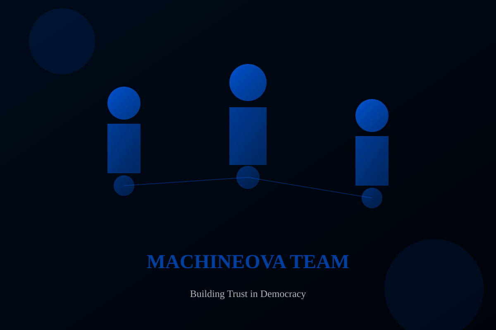

We build the technology that connects every level of a political campaign — from grassroots mobilizers to national leadership — through one integrated, real-time data layer.
MachineNova was built by people who understand how political campaigns actually operate — the complexity of managing hundreds of field agents, the pressure of election-day coordination, and the critical importance of having accurate, real-time data when decisions need to be made fast.
We are a startup with a focused mission: to give political parties, candidates, and campaign organizations the operational infrastructure they need to run modern, data-driven campaigns. Our platforms are not generic tools adapted for elections — they are purpose-built for the specific demands of electoral operations.
We are based in Nairobi, Kenya, and we build for the African political context — where field operations are complex, connectivity can be variable, and the stakes of getting election-day coordination right are high.


MachineNova is not a collection of separate apps. It is a single, integrated infrastructure where every platform shares a common identity, voter, and reporting layer. Data captured at the grassroots level flows directly into national dashboards in real time — no manual aggregation, no information gaps.
ID scanning, voter lookup, KYC verification, and live attendance analytics for political events and rallies. Organisers see not just who attended, but how many are registered voters in the relevant electoral area — data that directly informs follow-up mobilization.
Door-to-door voter capture with mobilizer attribution, performance metrics, and ID-verified vote projection. Every voter scanned is linked to the mobilizer who recruited them, replacing anecdotal estimates with defensible, verified field data.
The operational backbone of election day. Manages the full chain of command from national administrators to individual polling-station agents. Captures and aggregates results live as counting begins, with visual dashboards for national leadership.
Registration analysis, demographic profiling, and strategic regional intelligence. Combines field data with survey work to surface the political dynamics at play in each region — informing both campaign planning and election-day strategy.
National and regional party structures deploying agents, mobilizers, and coordinators across multiple constituencies. MachineNova gives party leadership real-time visibility into field operations and election-day status across the entire structure.
Candidates running independent campaigns who need professional-grade field coordination and results monitoring without the infrastructure of a large party organization.
Central campaign offices that need real-time visibility into field operations, mobilization progress, and election-day status — and the ability to intervene quickly when issues arise.
Civic organizations and observer missions requiring structured field reporting, station monitoring, and data collection. MachineNova provides the infrastructure for systematic, accountable observation operations.
All four platforms share a common identity, voter, and reporting layer. What a mobilizer captures in the field appears on the national command dashboard in real time. No silos. No duplication. No manual aggregation.
MachineNova is not a generic CRM or field management tool adapted for elections. Every feature — from the mobilizer attribution system to the agent hierarchy in the Command Center — was designed specifically for how political campaigns operate.
Our platforms are designed to be used by mobilizers and agents in the field, under pressure, often with limited technical background. The interfaces are simple and direct. The complexity is in the backend — not in what the user sees.
Role-based access control, geographic scoping, manager verification layers, and comprehensive audit trails mean that every action in the system is attributed, controlled, and auditable. This is not just a security feature — it is how you run a disciplined campaign operation.
Every capture, every report, every result submission is visible to the appropriate level of the hierarchy in real time. Campaign leadership does not wait for end-of-day reports. They see what is happening as it happens.
We are a startup. That means we move fast, we are responsive to client needs, and we build what campaigns actually require — not what a large software company thinks they need. But we build it with the discipline and security standards that election-grade operations demand.
Talk to our team about the right platform configuration for your campaign or organization.
Request a Demo →